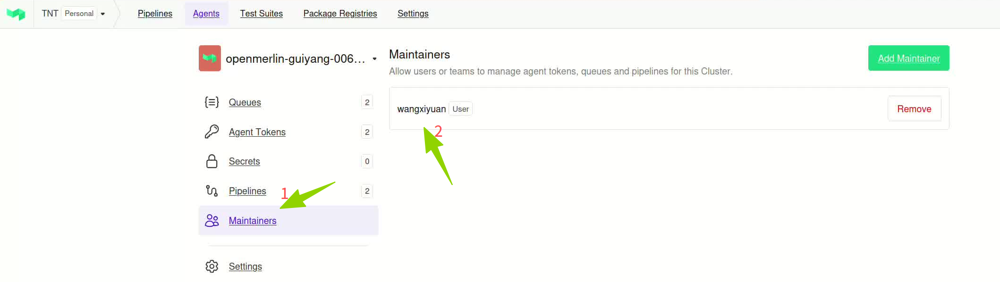
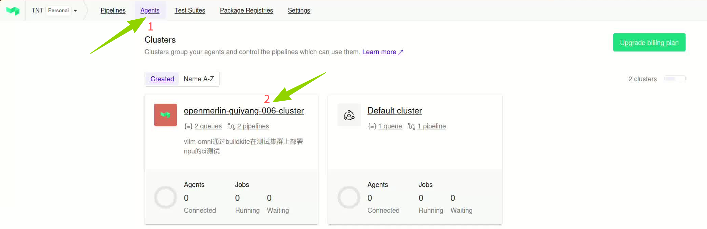
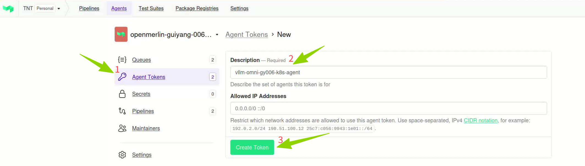
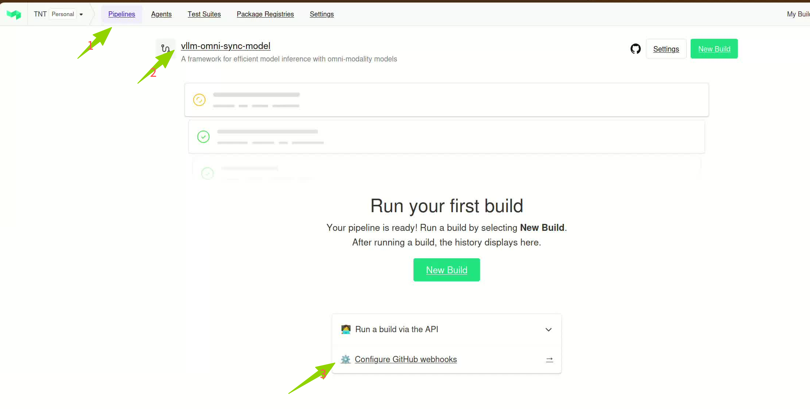
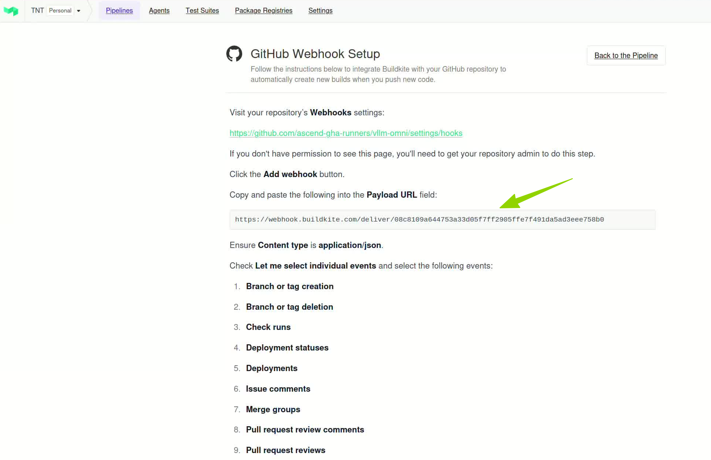
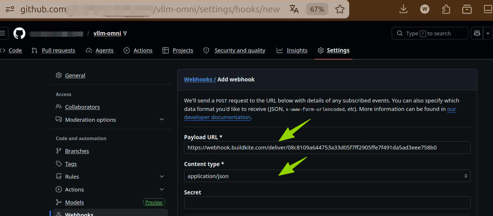

Buildkite CI 接入昇腾算力指导¶
本文档面向开源社区管理员，指导你如何将项目接入 Buildkite CI 系统，使用昇腾（Ascend）NPU 算力运行 CI 任务。
接入全景图¶
┌────────────────────────────────────────────────────────────────────────────────┐
│ 你的项目仓库 (GitHub) │
│ https://github.com/<org>/<repo> │
│ .buildkite/pipeline.yaml │
└────────────────────────┬───────────────────────────────────────────────────────┘
│ Webhook 触发
▼
┌────────────────────────────────────────────────────────────────────────────────┐
│ Buildkite Cloud (buildkite.com) │
│ ┌─────────────┐ ┌─────────────┐ ┌─────────────┐ ┌─────────────┐ │
│ │ Pipeline │───▶│ Queue │───▶│ Agent │───▶│ Job │ │
│ │ 定义流程 │───▶│ 任务队列 │───▶│ 执行器 │───▶│ 运行任务 │ │
│ └─────────────┘ └─────────────┘ └──────┬──────┘ └─────────────┘ │
└────────────────────────────────────────────────┼───────────────────────────────┘
│ Token 注册
▼
┌────────────────────────────────────────────────────────────────────────────────┐
│ 基础设施 Kubernetes 集群 │
│ ┌─────────────────────┐ ┌─────────────────────┐ │
│ │ CN12-001 集群 │ │ HK-001 集群 │ │
│ │ Ascend 910A3 │ │ Ascend 910A2B3 │ │
│ │ queue: ascend-a3 │ │ queue: ascend-a2b3 │ │
│ └─────────────────────┘ └─────────────────────┘ │
└────────────────────────────────────────────────────────────────────────────────┘
接入流程图¶
开始
│
▼
┌───────────────────────────────────────────────────────┐
│ 步骤 1: 生成 Buildkite Agent Token │
│ 你：在 Buildkite 官网创建 Token │
│ 我们：提供 Token 接收渠道 │
│ 验收：Token 已安全传递给基础设施团队 │
└────────────────────────┬──────────────────────────────┘
│
▼
┌───────────────────────────────────────────────────────┐
│ 步骤 2: 创建 Queue（队列） │
│ 你：告知组织创建者需要创建队列 │
│ 我们：提供队列名称规范，在集群部署 Agent │
│ 验收：Buildkite 官网 Queue 显示绿色 Connected │
└────────────────────────┬──────────────────────────────┘
│
▼
┌───────────────────────────────────────────────────────┐
│ 步骤 3: 在 Buildkite 官网创建 Pipeline │
│ 你：在 Buildkite 官网创建 Pipeline，关联 GitHub 仓库 │
│ 我们：提供 Pipeline 创建指引 │
│ 验收：Pipeline 已创建，关联到正确的仓库 │
│ 设置名称、默认分支、Pipeline 脚本文件路径等 │
└────────────────────────┬──────────────────────────────┘
│
▼
┌───────────────────────────────────────────────────────┐
│ 步骤 4: 配置 Webhook │
│ 你：在 Buildkite 官网获取 Webhook URL │
│ 我们：提供 Webhook 配置指引 │
│ 验收：向仓库推送代码，能触发 Pipeline │
│ 在 GitHub 仓库 Settings 中配置 Webhook │
└────────────────────────┬──────────────────────────────┘
│
▼
┌───────────────────────────────────────────────────────┐
│ 步骤 5: 编写 Pipeline YAML │
│ 你：参考模板编写 .buildkite/pipeline.yaml │
│ 我们：提供模板和字段说明 │
│ 验收：Pipeline 语法正确，能在官网正常解析 │
└────────────────────────┬──────────────────────────────┘
│
▼
┌───────────────────────────────────────────────────────┐
│ 步骤 6: 验证接入 │
│ 你：提交代码，观察 Pipeline 运行状态 │
│ 我们：协助排查问题 │
│ 验收：Job 在昇腾 NPU 上成功执行 │
└────────────────────────┬──────────────────────────────┘
│
▼
完成接入
详细步骤¶
步骤 1：生成 Buildkite Agent Token¶
目标：创建一个 Token，让基础设施团队的 Agent 能够连接到你的 Buildkite 组织。
你需要做什么：
- 确认你有权限：你需要是 Buildkite 组织的 管理员（Admin） 或 组织创建者。
- 如果你不是管理员，请联系你项目的 Buildkite 组织创建者。
-
查看方式：登录 buildkite.com，进入你的组织，点击 Settings → Members，查看谁有 Admin 角色。

-
生成 Agent Token：
- 登录 buildkite.com
- 进入你的组织 → Agents → Agent tokens
- 点击 New Agent Token
- 填写描述，命名格式：
<项目名>_<集群名>- 示例：
vllm_omni_cn12_001、vllm_omni_hk001
- 示例：
- 点击 Create Token
- 立即复制保存 Token（Token 只显示一次，关闭后无法再次查看）


{kind=link}
{kind=link}
{kind=link}
怎么把 Token 发给我们：
考虑到 Token 保密需求，申请方式是向 ascendinfra@huawei.com 发送邮件。
怎么验证这步完成：
- 你已将 Token 安全传递给基础设施团队。
- 基础设施团队确认收到 Token。
步骤 2：创建 Queue（队列）¶
目标：创建一个队列，用于将 CI 任务路由到昇腾 NPU 集群执行。
队列名称规范：
| 集群 | NPU 型号 | 队列名称 |
|---|---|---|
| CN12-001 | Ascend 910A3 | ascend-a3 |
| HK-001 | Ascend 910A2B3 | ascend-a2b3 |
如果你的项目需要同时使用两个集群，需要创建两个 Token 和两个队列。
你需要做什么：
- 联系你的 Buildkite 组织创建者（管理员），请他在 Buildkite 官网创建队列：
- 进入组织 → Queues → Create Queue
-
队列名称必须使用基础设施团队提供的标准名称（如
ascend-a3） -
将以下信息告知基础设施团队：
- 项目名称
- Git 仓库地址
- 步骤 1 中生成的 Token
我们做什么：
- 基础设施团队收到信息后，会在对应的 Kubernetes 集群中部署 Buildkite Agent。
- Agent 会使用你提供的 Token 注册到 Buildkite，并监听指定队列的任务。
怎么验证这步完成：
- 登录 buildkite.com → 进入你的组织 → Agents
- 找到对应的 Queue（如
ascend-a3） - 查看 Agent 状态：Connected 列显示绿色圆点 ✅ 表示连接成功
- 如果显示灰色或红色，说明 Agent 未连接，请联系基础设施团队排查
Queue: ascend-a3
| Agent Name | Version | Queue | Connected |
|---|---|---|---|
| agent-abc123 | v3.80.0 | ascend-a3 | 🟢 ← 绿色表示已连接 |
{kind=link}
{kind=link}
步骤 3：在 Buildkite 官网创建 Pipeline¶
目标：在 Buildkite 官网上创建一个 Pipeline，将其与你的 GitHub 仓库关联，并配置基本信息。
你需要做什么：
- 创建 Pipeline：
- 登录 buildkite.com
- 进入你的组织 → Pipelines → New Pipeline
-
依次填写以下配置：
-
Pipeline 基本配置：
- Name：为你的 Pipeline 起一个合适的名字（如项目名 + 用途，例如
vllm-npu-ci） - Repository：选择或输入你的 GitHub 仓库地址（如
https://github.com/<org>/<repo>） - Default Branch：设置默认触发分支（如
main） -
Pipeline Definition Source：选择从仓库读取 Pipeline 定义
- 选择 Read pipeline definition from repository
- File path：填写 Pipeline 脚本文件路径，默认为
.buildkite/pipeline.yml
-
触发条件配置（可选）：
- 在 Pipeline 创建完成后，进入 Settings → GitHub
- 配置触发条件：
- Trigger builds on pushes：推送时触发
- Trigger builds on pull requests：PR 时触发
- 可选择仅在特定分支或特定文件变更时触发
{kind=link}
{kind=link}
怎么验证这步完成：
- 在 Buildkite 官网的 Pipelines 列表中能看到新创建的 Pipeline
- Pipeline 的 Repository 显示为你的 GitHub 仓库地址
- Pipeline 的 Source 显示为从仓库读取（
.buildkite/pipeline.yml）
步骤 4：配置 Webhook¶
目标：让 GitHub 仓库的代码推送、PR 等事件能够自动触发 Buildkite Pipeline。
你需要做什么：
- 获取 Webhook URL：
- 登录 buildkite.com
- 进入你的组织 → 找到步骤 3 中创建的 Pipeline
- 进入 Pipeline → Settings → GitHub
- 找到 Webhook URL，复制该地址
-
格式类似：
https://webhook.buildkite.com/deliver/xxxxxx -
在 GitHub 仓库配置 Webhook：
- 打开你的 GitHub 仓库 → Settings → Webhooks → Add webhook
- Payload URL：粘贴上一步复制的 Webhook URL
- Content type：选择
application/json - Secret：按团队要求填写，不建议在生产环境留空
- Events：选择 Let me select individual events，勾选：
PushesPull requests
- 点击 Add webhook



{kind=link}
{kind=link}
{kind=link}
怎么验证这步完成：
- 在 GitHub Webhooks 页面，新添加的 Webhook 旁边显示绿色圆点 ✅
- 或者向仓库推送一个测试提交，观察 Buildkite 官网是否出现新的 Build 记录
步骤 5：编写 Pipeline YAML¶
目标：定义你的 CI 任务流程，告诉 Buildkite 要执行什么任务、在什么资源上执行。
你需要做什么：
- 在项目仓库根目录创建
.buildkite/目录 - 在该目录下创建
pipeline.yaml（或pipeline.yml） - 参考下面的模板编写你的 Pipeline
Pipeline 模板：
以下是一个完整的示例，展示了构建镜像和在昇腾 NPU 上运行测试的典型流程：
steps:
# 第一步：构建并推送镜像
- label: ":buildkit: Build and Push NPU Test Image"
key: image-build
agents:
queue: "ascend-a2b3"
resource_class: "npu-2"
plugins:
- kubernetes:
metadata:
annotations:
vault.hashicorp.com/agent-init-first: "true"
vault.hashicorp.com/agent-inject: "true"
vault.hashicorp.com/role: ascend-gha-runners
vault.hashicorp.com/tls-skip-verify: "true"
env:
VLLM_IMAGE_TAG: "${BUILDKITE_COMMIT}"
IMAGE_NAME: "your-project-ci-npu"
IMAGE_REGISTRY: "swr.cn-southwest-2.myhuaweicloud.com/your-namespace"
BUILDKITD_ADDR: "tcp://buildkitd-service.buildkitd:1234"
command: |
set -ex
echo "--- Building and pushing NPU Test Image"
echo "Image: ${IMAGE_REGISTRY}/${IMAGE_NAME}:${VLLM_IMAGE_TAG}"
# 你的镜像构建命令...
# 第二步：在 NPU 上运行测试（依赖镜像构建完成）
- label: "🧪 NPU Unit Test"
depends_on: image-build
key: npu-test
agents:
queue: "ascend-a3"
resource_class: "npu-2"
image: "${IMAGE_REGISTRY}/${IMAGE_NAME}:${BUILDKITE_COMMIT}"
command: |
set -ex
echo "--- Running NPU tests"
pytest -v -s -m 'npu'
关键字段说明：
| 字段 | 含义 | 示例值 | 说明 |
|---|---|---|---|
label |
任务显示名称 | 🧪 NPU Unit Test |
在 Buildkite 官网上显示的任务名，支持 emoji |
key |
任务唯一标识 | npu-test |
用于任务间依赖引用，同一 Pipeline 中不能重复 |
depends_on |
依赖的前置任务 | image-build |
指定该任务在哪个任务完成后执行 |
agents.queue |
队列名称 | ascend-a3 |
必填，指定任务在哪个队列执行，必须与步骤 2 创建的队列名称一致 |
agents.resource_class |
NPU 资源规格 | npu-2 |
必填，指定需要多少张 NPU 卡 |
image |
运行镜像 | registry/your-image:tag |
任务运行使用的容器镜像 |
command |
执行命令 | pytest -v |
实际执行的 shell 命令 |
env |
环境变量 | KEY: value |
传递给任务的环境变量 |
if |
触发条件 | build.branch == "main" |
条件满足时才执行该任务 |
plugins.kubernetes |
K8s 插件配置 | 见模板 | 用于注入 Vault 密钥等高级配置（通常由基础设施团队提供） |
资源规格（resource_class）选择：
| 资源类 | NPU 卡数 | CPU | 内存 | 适用场景 |
|---|---|---|---|---|
npu-1 |
1 卡 | 23 核 | 64Gi | 轻量测试 |
npu-2 |
2 卡 | 39-46 核 | 128Gi | 标准测试（推荐默认使用） |
npu-4 |
4 卡 | 78 核 | 256Gi | 中等规模测试 |
npu-8 |
8 卡 | 156 核 | 512Gi | 大规模测试 |
npu-16 |
16 卡 | 312 核 | 1024Gi | 压力测试 / 完整测试 |
注意：
npu-1和npu-16仅在特定集群可用，具体可咨询基础设施团队。
怎么验证这步完成：
- 将
pipeline.yaml提交到你的仓库 - 在 Buildkite 官网进入对应 Pipeline，页面能正常解析并显示 Pipeline 结构
- 没有语法错误提示
步骤 6：验证接入完成¶
完整验证流程：
- 确认 Agent 已连接
- 登录 buildkite.com → 你的组织 → Agents
-
确认对应 Queue 下的 Agent 状态为 绿色 Connected ✅
-
触发一次测试运行
- 向你的仓库提交一个代码变更（或创建一个 PR）
-
等待几秒，观察 Buildkite 官网是否出现新的 Build
-
观察 Pipeline 运行
- 进入 Build → 查看 Pipeline 执行流程
-
确认每个 Step 的状态：
- 🟢 绿色：成功
- 🔴 红色：失败
- 🟡 黄色：运行中
- ⚪ 灰色：等待中
-
确认任务在昇腾 NPU 上执行
- 点击任意 Step 查看详细日志
- 日志中应能看到 NPU 相关的输出（如
npu-smi info的结果）
验证检查清单：
- [ ] Agent Token 已生成并安全传递给基础设施团队
- [ ] Queue 已创建，名称符合规范（
ascend-a3或ascend-a2b3） - [ ] Buildkite 官网中对应 Queue 的 Agent 显示绿色 Connected
- [ ] Pipeline 已在 Buildkite 官网创建，且关联到正确的 GitHub 仓库
- [ ] Webhook 已在 GitHub 仓库配置，且状态正常
- [ ]
.buildkite/pipeline.yml已提交到仓库 - [ ] 推送代码后，Buildkite 自动触发了 Build
- [ ] Build 中的 Job 成功在昇腾 NPU 上执行
常见问题¶
Q1：如何知道我的组织创建者是谁？
登录 buildkite.com → 进入你的组织 → Settings → Members，查看角色为 Admin 的用户。
Q2：Agent 连接状态不是绿色怎么办？
- 检查 Token 是否正确传递给了基础设施团队
- 认 Queue 名称是否与基础设施团队部署的 Agent 监听队列一致
- 联系基础设施团队排查 Agent 部署状态
Q3：推送代码后没有触发 Build？
- 检查 GitHub Webhook 配置是否正确，Webhook 列表中是否有最近的成功投递记录
- 确认
.buildkite/pipeline.yaml文件路径和格式是否正确 - 检查 Pipeline 的 Source Code 设置是否指向了正确的仓库和分支
Q4：如何查看任务运行日志？
在 Buildkite 官网 → 进入具体 Build → 点击任意 Step → 右侧面板会显示实时日志输出。
Q5：我的项目需要同时使用多个集群怎么办？
- 为每个集群生成独立的 Agent Token（如
project_cn12_001、project_hk001） - 在 Pipeline 中通过不同的
queue字段将任务路由到不同集群： ```yaml -
label: "Test on A3" agents: queue: "ascend-a3" resource_class: "npu-2" command: ...
-
label: "Test on A2B3" agents: queue: "ascend-a2b3" resource_class: "npu-2" command: ... ```
反馈与支持¶
如果在接入过程中遇到任何问题，请通过以下方式反馈：
- 发起讨论：https://github.com/ascend-gha-runners/docs/discussions
- 提交时，请提供以下信息：
- 项目名称和 Git 仓库地址
- 问题描述和错误日志截图
- 已完成的步骤和卡住的环节
文档版本: v2.0
最后更新: 2026-04-28